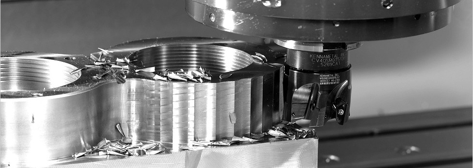
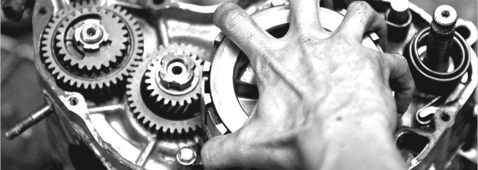
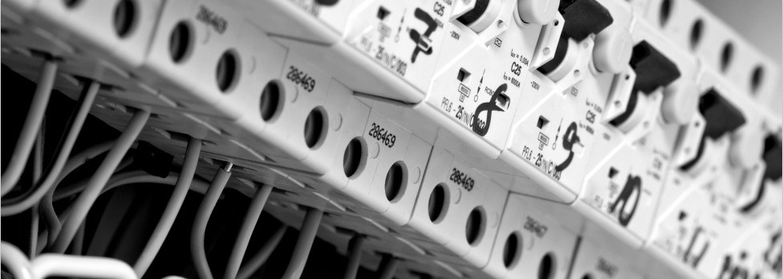

Metināšana
Sertificēti speciālisti darbam ar visa veida metāliem — plašs biezumu un konfigurāciju diapazons, no plāksnes līdz caurulei.
Metināšana, metālapstrāde, mehānika un elektromehānika — vienā cehā Zivju ielā 3. Sabojātu agregātu izjaucam, trūkstošo detaļu izgatavojam uz vietas un iekārtu nododam atpakaļ darbam.

Viena detaļa iziet cauri visiem posmiem pie viena izpildītāja — nav jāmeklē atsevišķi metinātājs, virpotājs un elektriķis.
Sertificēti speciālisti darbam ar visa veida metāliem — plašs biezumu un konfigurāciju diapazons, no plāksnes līdz caurulei.
Virpošana, frēzēšana, slīpēšana. Bojātu detaļu atjaunošana, jaunu detaļu un rezerves daļu izgatavošana.
Mehāniķi un atslēdznieki mehānisku un hidraulisku agregātu un sistēmu remontam, atjaunošanai un apkalpošanai.
Elektrisko ķēžu, apakšstaciju, elektrodzinēju un pārējo rūpniecības elektroiekārtu projektēšana, instalācija un remonts.
Iekšējās un ārējās apdares darbi un celtniecības remonts: arhitekti-projektētāji, betonētāji, flīzētāji, jumiķi, krāsotāji, apmetēji.
Ražošanas iekārtas, spēka agregāti un to elektriskā daļa. Ja detaļa vairs nav nopērkama, izgatavojam to no jauna.

SIA STAALF ir ražošanas apvienība, kas strādā metālapstrādes, remonta un mehānisko agregātu apkalpošanas jomā — tajā skaitā dzinēji, dīzeļģeneratori, ražošanas iekārtas un darbmašīnas.
Uzņēmums nodarbojas arī ar dažādu elektroiekārtu uzstādīšanu, instalāciju, apkalpošanu un remontu: elektrodzinēji, apakšstacijas, elektriskās ķēdes.

STAALF SIA
Reģ. Nr. 40103918367
PVN reģ. Nr. LV40103918367